이 저장소가 하는 일
첫 장면부터 결과를 보여 줘요. 왼쪽과 오른쪽 창 모두 oryzo.ai인데, 오른쪽이 AI(Artificial Intelligence)가 다시 만든 복제본이에요. 코스터를 파는 3D 제품 사이트가 움직임까지 거의 같아요.
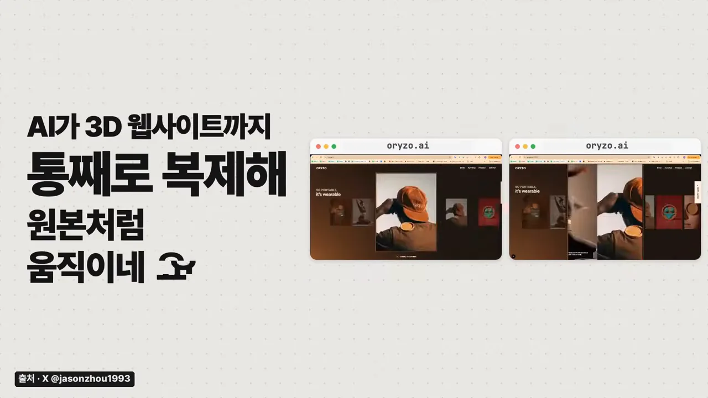
/clone-website 명령과 주소뿐이라는 게 영상의 출발점이에요. 영상 00:03에서 보기제목에 REA가 들어 있어서 헷갈리기 쉬운데, 이 저장소는 REA와 관계가 없어요. 아래 화면의 왼쪽이 JCodesMore가 만든 AI Website Cloner Template이고, 오른쪽이 morluto의 REA예요. 공개일 칸을 보면 이 저장소가 한 달 먼저 나왔어요.
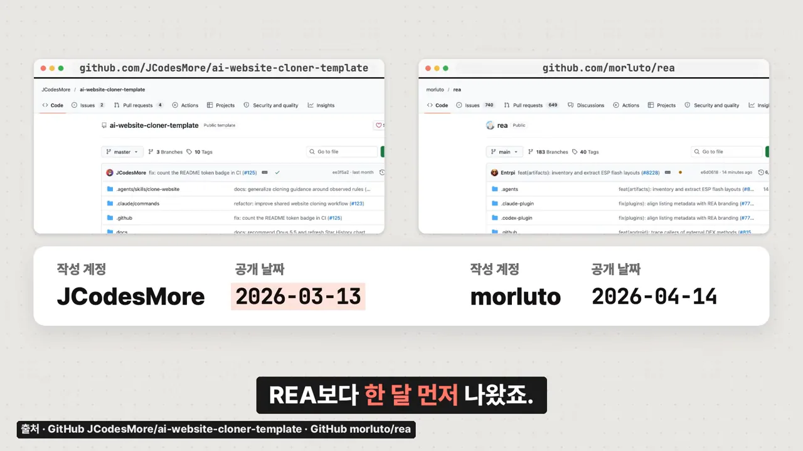
더 중요한 차이는 형태예요. 이건 실행 프로그램이 아니라 코딩 에이전트가 읽고 따르는 지침서예요. 명령을 받으면 에이전트가 지침서대로 사이트를 살펴보고 다시 만들어요. 영상 시점에 깃허브 별은 38,000개를 넘었고, 6월에는 깃허브 트렌딩 TypeScript 부문 1위에도 올랐어요.
영상은 사람들이 올린 결과물을 찾아 다섯 갈래로 묶었어요. 아래 카드가 그 순서이고, 이 문서도 같은 순서로 따라가요.
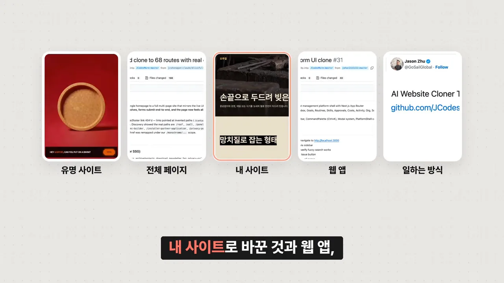
사용법과 직접 돌려 본 결과
전체 흐름을 먼저 보면 사람이 하는 일은 왼쪽 네 칸이 거의 전부예요. 준비 문장과 명령 하나를 넣을 때마다 오른쪽에서 에이전트가 움직여요.
준비: Node 24와 준비 문장
필요한 건 Node 24 이상과 브라우저 사용을 켠 코딩 에이전트, 이렇게 두 가지예요. 터미널에서 node -v를 쳐서 화면처럼 24 이상이 나오는지 먼저 봐요. 낮으면 버전을 올린 뒤에 시작해요.
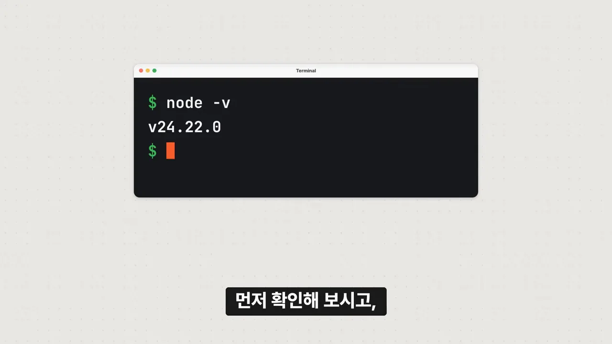
그다음 README의 1번 항목에 있는 분홍색 문장을 복사해 에이전트에 붙여 넣어요. 에이전트는 어디 둘지 묻고, 새 폴더에 저장소를 받아 설치한 뒤 점검까지 돌려요.
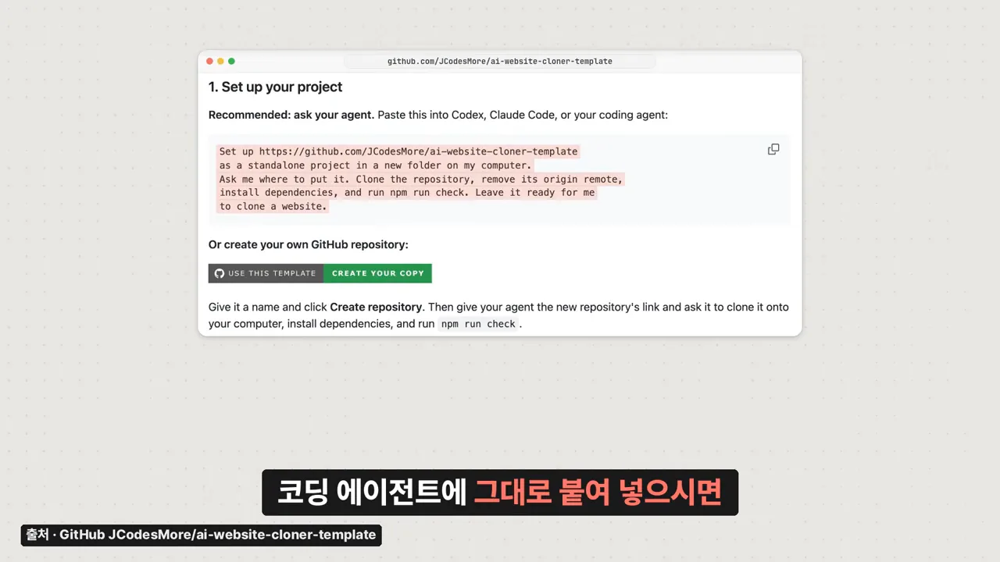
npm run check까지 다 적혀 있어서 그대로 붙이면 돼요. 영상 01:21에서 보기준비가 끝나면 새로 생긴 프로젝트 폴더를 에이전트에서 열고 브라우저 사용을 켜요. 그리고 /clone-website 뒤에 주소만 넣으면 돼요.
/clone-website https://example.com에이전트의 네 단계
영상은 CLOU 사이트를 복제하는 실제 화면으로 단계를 보여 줘요. 첫 단계 Map에서는 오른쪽 위 말풍선처럼 원본 주소 https://www.clouarchitects.com/를 내 프로젝트의 / 경로와 맞춰 놓아요.
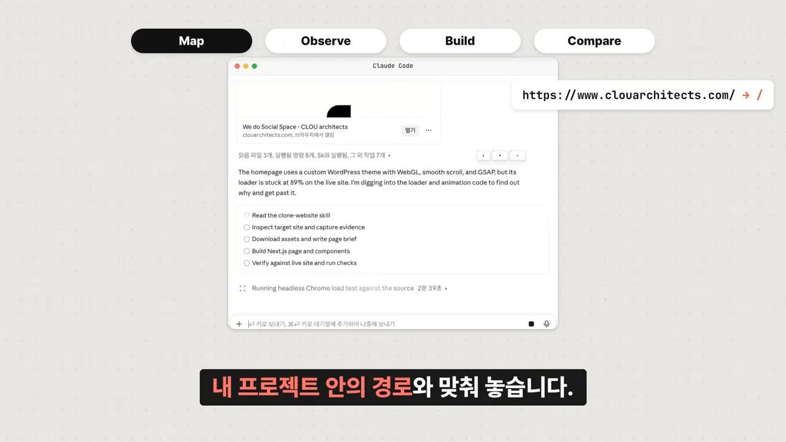
Observe에서는 데스크톱과 모바일 화면으로 사이트를 끝까지 내려 보고, 메뉴와 탭도 직접 눌러 봐요. 화면의 로그에도 데스크톱, 태블릿, 모바일을 모두 캡처했다는 말이 적혀 있어요.
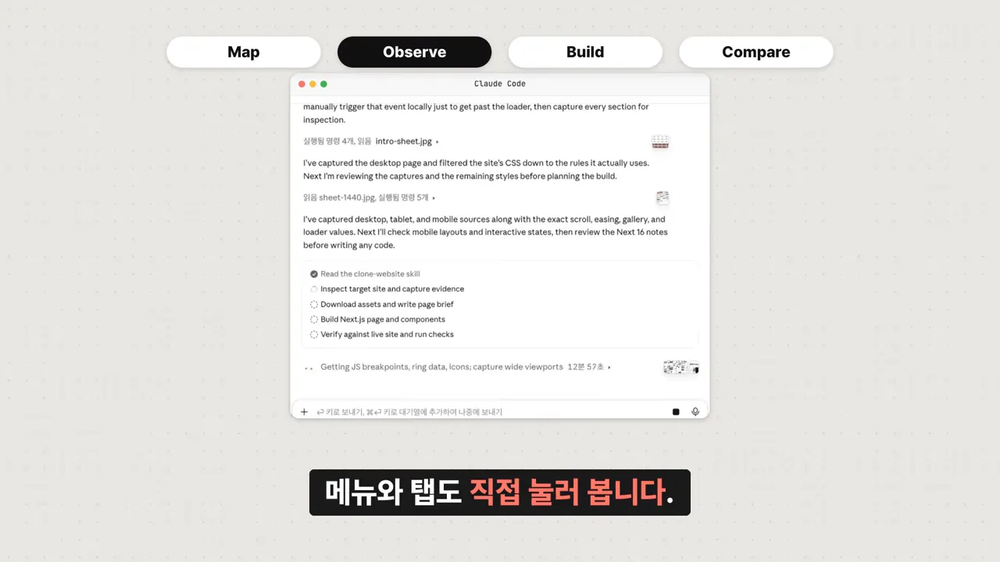
Build에서는 나중에 고칠 수 있는 구성 요소로 사이트를 새로 짜요. 화면 오른쪽에 겹쳐 뜬 창이 이 단계에서 만들어지는 복제본이에요. Compare에서는 만든 화면을 원본과 같은 크기, 같은 스크롤로 비교해 큰 차이부터 고쳐요.
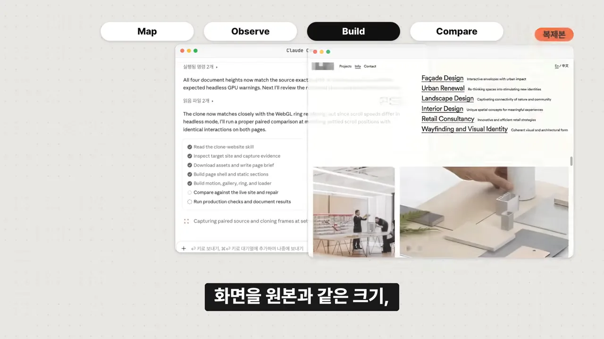
영상이 꼭 기억해 두라고 하는 대목이 이거예요. 코드는 새로 짜지만 글, 글꼴, 이미지, 영상은 원본 파일을 그대로 받아와요. 아래 SKILL.md 화면의 강조된 줄이 그 지시이고, 아래쪽 알약이 받아오는 것들이에요. 이 사실이 뒤에 나오는 금지 사항으로 이어져요.
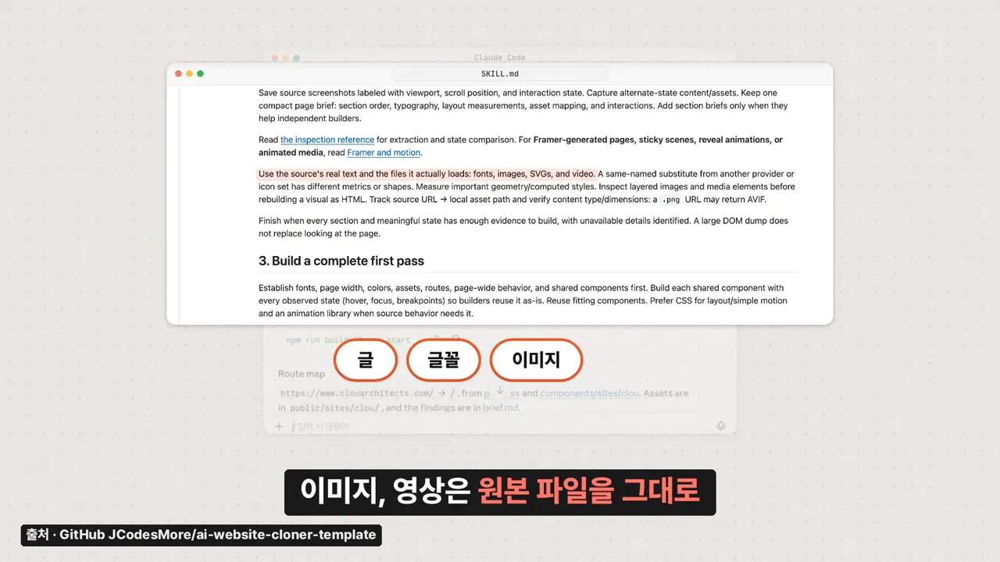
네 단계가 끝나면 에이전트가 실행 방법과 남은 차이 목록을 내놓아요. 아래 완료 보고에는 경로 대응표, 원본과의 비교, 돌린 검사 결과가 항목별로 적혀 있어요. 고칠 곳은 에이전트에게 말로 시키면 돼요.
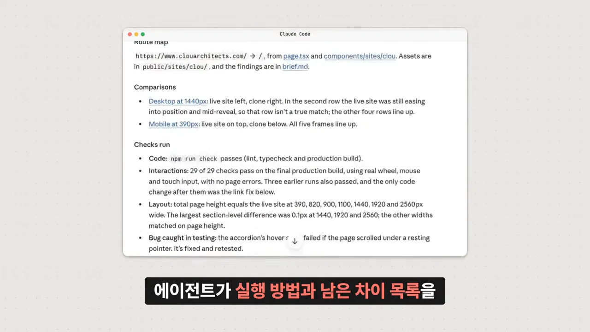
Claude Code가 아니어도 돼요. README의 지원 표에서 강조된 Codex CLI(Command Line Interface)와 OpenCode를 쓴다면, 같은 지침서를 직접 읽게 하면 된다고 영상은 설명해요.
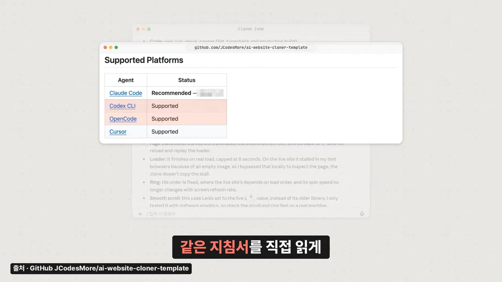
CLOU 사이트를 직접 돌려 본 결과
영상 제작자가 직접 돌린 곳은 CLOU라는 건축 사무소 사이트예요. 사무소에 미리 연락해 허락을 받고 첫 페이지를 복제했어요. 명령과 주소를 넣고 기다린 것 말고는 따로 한 일이 없었다고 해요. 아래 화면의 왼쪽이 원본, 오른쪽이 복제본인데 제목과 사진이 거의 같아요.
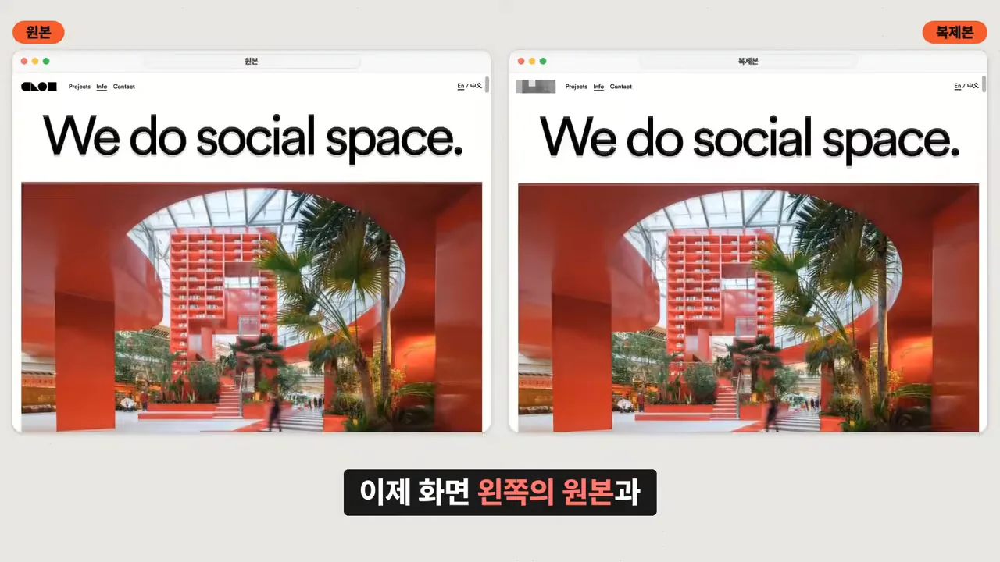
움직임도 비교해요. 원본은 스크롤하면 제목 위를 검은 띠가 1초쯤 쓸고 지나가요. 아래 화면의 'design.' 글자 끝에 걸린 검은 조각이 그 띠예요. 복제본에도 같은 효과가 나왔어요.
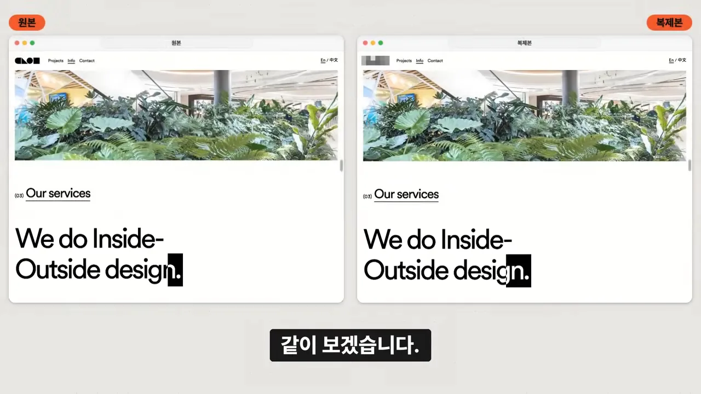
진행 타이머로는 1시간 36분이 걸렸어요. 카드 아래 작은 글씨로 1시간 36분 15초, 65.9k 토큰이라고 적혀 있어요. 저장소를 확인하니 시작할 때보다 파일 130개가 늘거나 바뀌었어요.
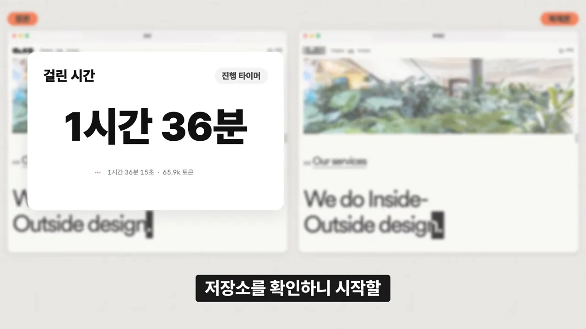
에이전트는 완벽하다고 하지 않고 남은 차이를 직접 적어 뒀어요. 아래 Remaining differences 칸을 보면 첫 페이지만 복제해서 다른 페이지 링크는 원본 사이트로 이어지고, 페이지 전환 효과는 빠졌다고 나와요.
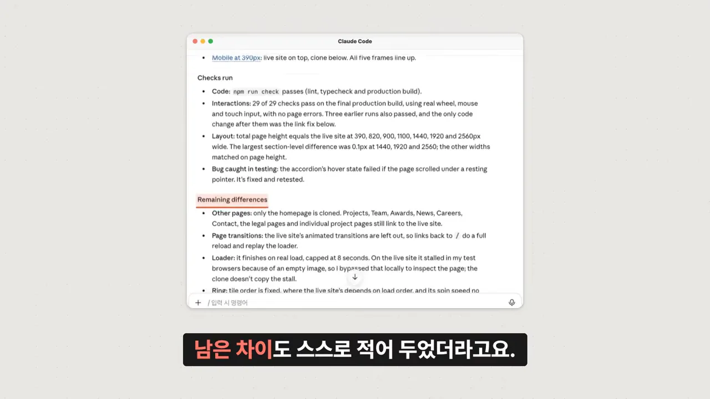
사람들이 복제한 사이트
영상에 나온 사례의 숫자를 먼저 한 표로 모았어요. 시간은 에이전트 완료 보고에 나온 값이고, 빈칸은 영상이 말하지 않은 값이에요.
| 복제한 곳 | 어떤 사이트 | 걸린 시간 | 결과물 |
|---|---|---|---|
| Oryzo | 3D 제품 사이트 | — | 셰이더 추출 스킬을 함께 씀 |
| instruct.ai | 저장소 공식 데모 | — | 수채화 같은 질감까지 재현 |
| Mobbin | 디자인 레퍼런스 사이트 | 29분 1초 (Codex) | 9개 구역, 파일 59개, 이미지 117장 |
| Higgsfield | 영상 생성 플랫폼 첫 화면 | 22분 3초 | 구성 요소 13개, 14개 구역, 파일 84개 |
| monochrome.so | 사이트 전체 | — | 68페이지, 파일 198개 |
| nodaysoff.run | 개인 달리기 기록판 | — | 차트 6종 |
| aurora-agency.ovh | 로고 모양 영상 첫 화면 | — | 이미지 17개, 영상 6개 |
3D와 질감이 있는 유명 사이트
처음에 나온 Oryzo를 다시 봐요. 코르크 코스터 하나를 파는 3D 제품 사이트인데, 아래처럼 커피잔과 책상 장면까지 원본과 복제본이 같은 구도로 나와요.
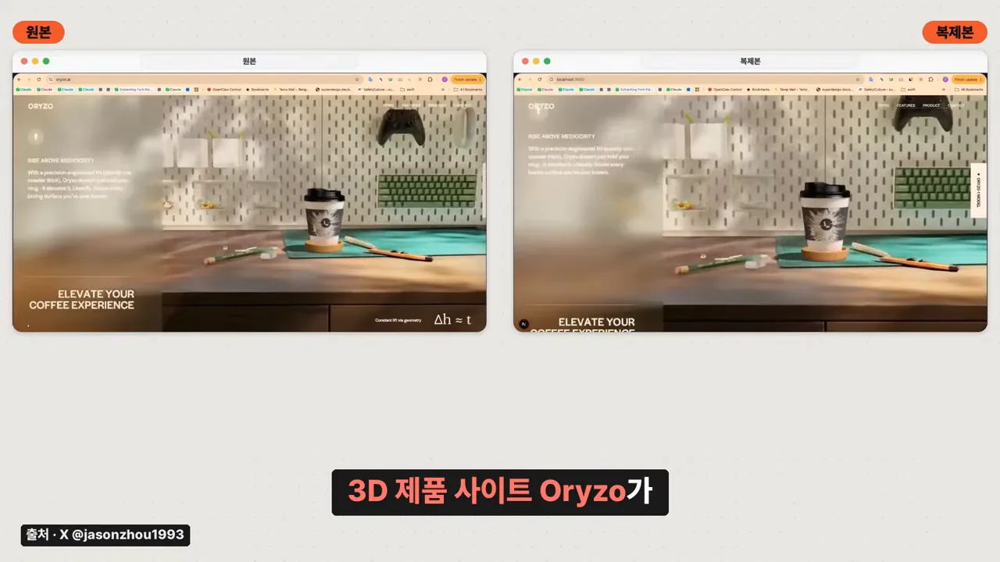
다만 이 저장소 하나로 된 건 아니에요. 게시물의 강조된 줄을 보면 web-shader-extractor 스킬을 함께 썼다고 적혀 있어요. 이 게시물은 조회 약 10만, 북마크 1,325개를 모았어요.
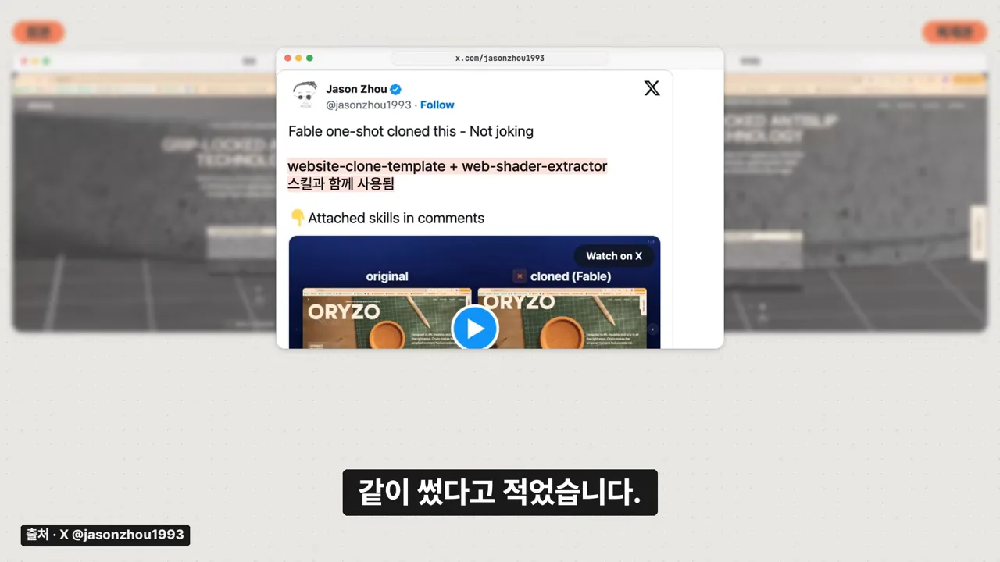
저장소가 직접 내건 공식 데모는 instruct.ai를 복제했어요. 아래 왼쪽이 원본, 오른쪽이 복제본이에요. 카드 뒤쪽에 번지는 분홍색 수채화 질감을 보면 돼요. 이 데모 영상의 유튜브 조회수는 27,613회이고, 재게시까지 합치면 수십만에 이른다고 해요.
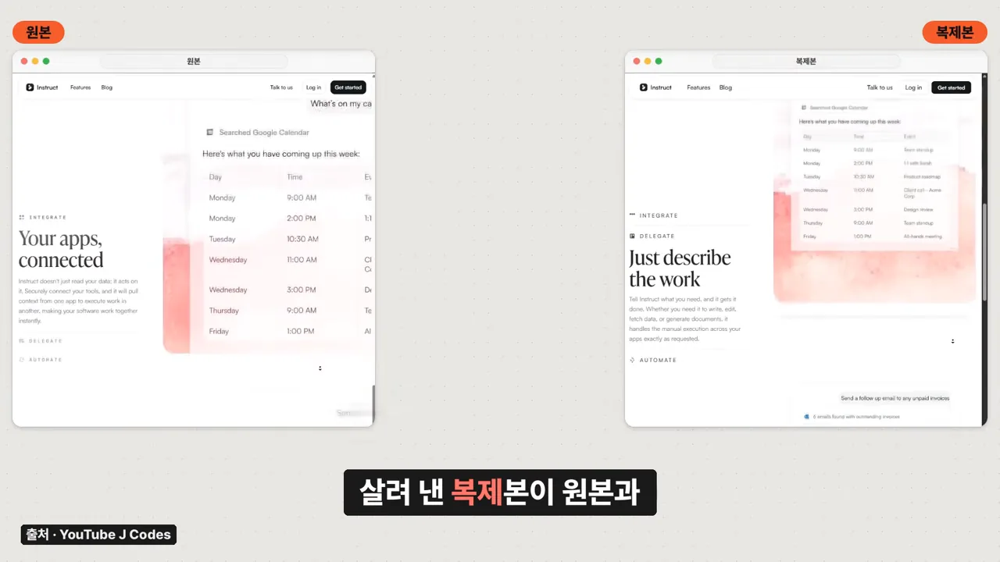
Codex로 돌린 사례
Mobbin 사례는 Claude Code가 아니라 Codex로 돌렸어요. 위쪽 Codex 표시 아래로 'Discover real-world design inspiration' 제목이 두 창에 똑같이 나와요. 제작자는 Mobbin을 포함해 세 곳을 복제했어요.
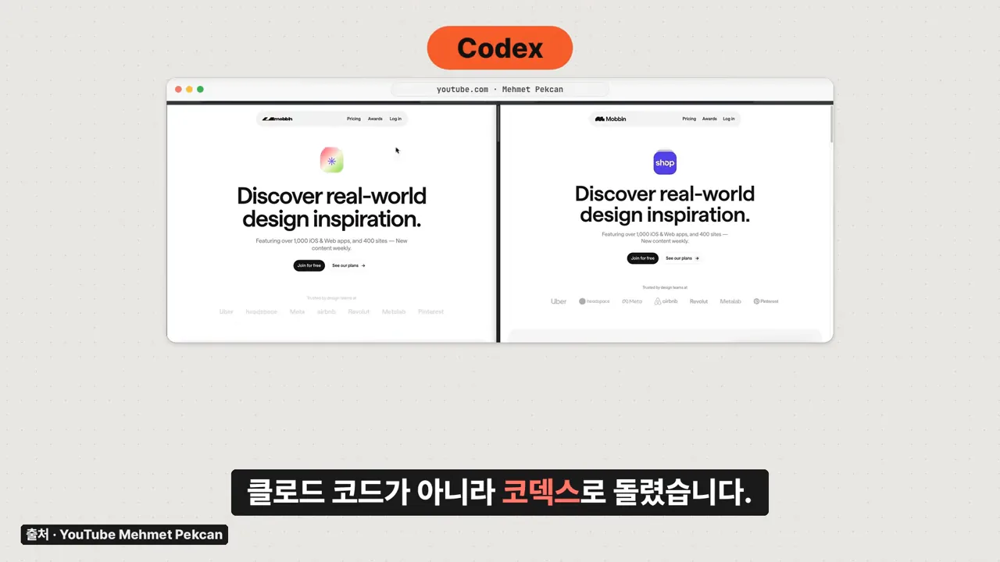
완료 보고의 숫자는 오른쪽 카드에 요약돼 있어요. 29분 1초 동안 9개 구역을 파일 59개로 완성했고, 원본의 이미지 117장도 빠짐없이 받아왔어요.
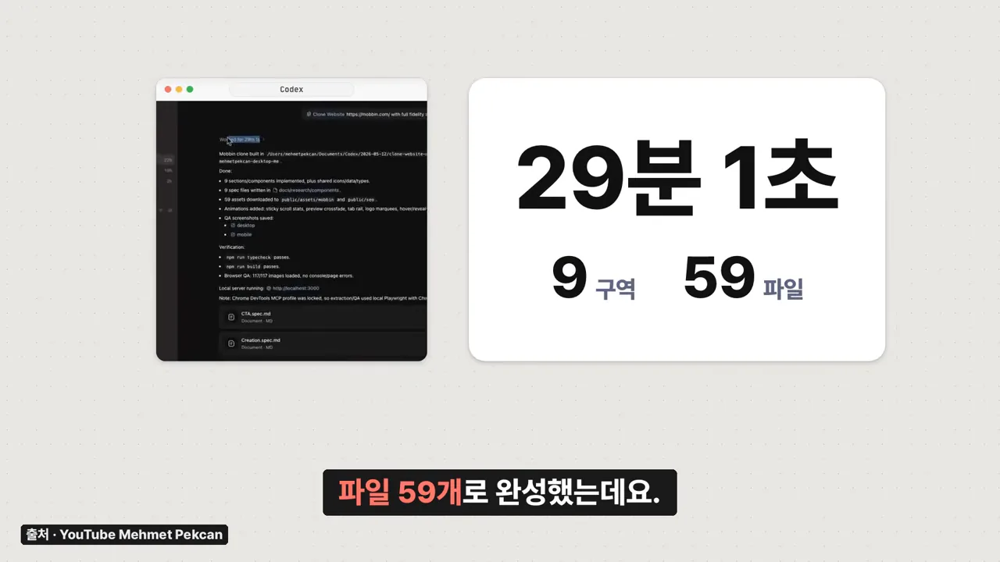
다른 사용자는 어두운 바탕에 영상 카드가 빼곡한 Higgsfield 첫 화면을 복제했어요. 아래 두 창처럼 격자 구성이 그대로예요. 22분 3초 동안 구성 요소 13개와 14개 구역을 구현했고, 파일 84개 중 영상 36개와 이미지 36개를 받아왔어요.
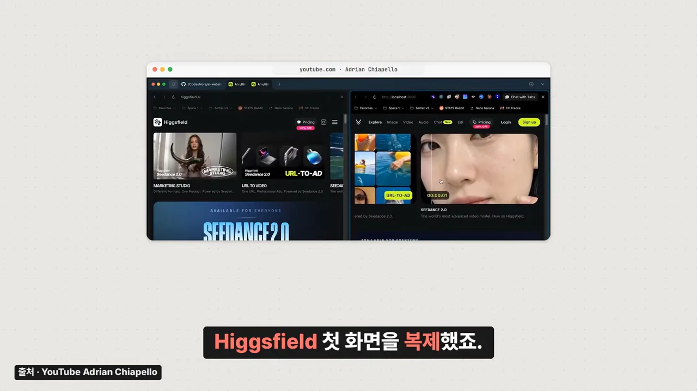
첫 화면을 넘어선 사례
monochrome.so 사례는 사이트 전체를 실제 주소 구조에 맞춰 넓혔어요. 아래 PR(Pull Request) 설명에 처음엔 머리글과 바닥글 링크가 전부 404였고, 실제 경로를 찾아 맞췄다고 나와요. 저널 13개, 사례 11개, 보도 8개까지 옮기며 페이지가 68개로 늘었고 파일은 198개가 됐어요.
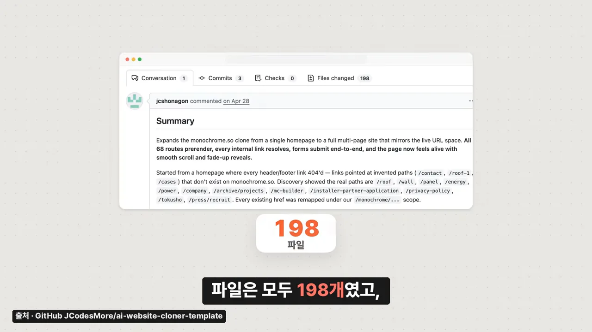
다음은 개인 달리기 기록판 nodaysoff.run이에요. 아래 PR 제목에 있는 대로 streak dashboard를 복제한 사례예요. 영상은 차트 6종과 3,881일, 13,454마일의 기록까지 다시 구현했다고 소개해요.
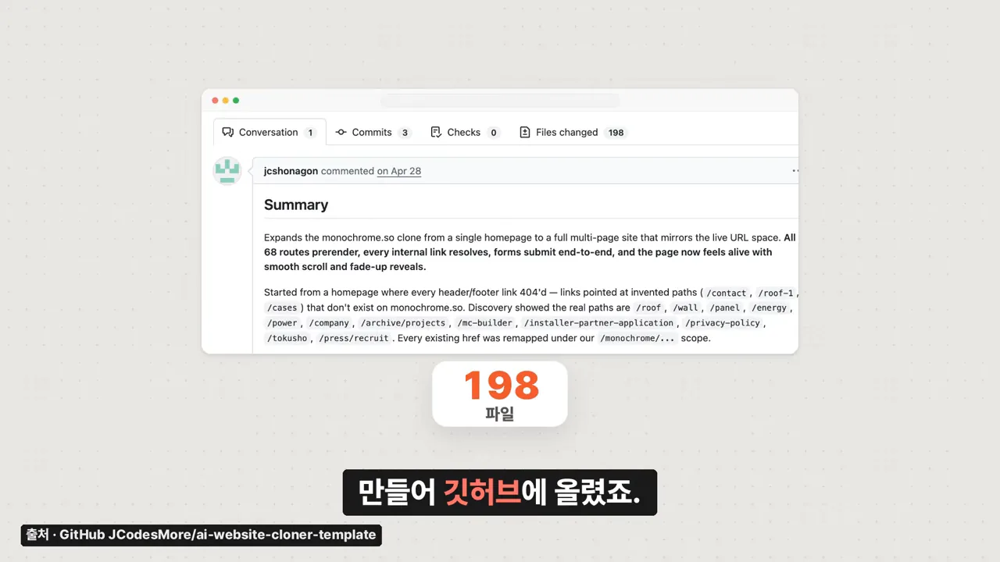
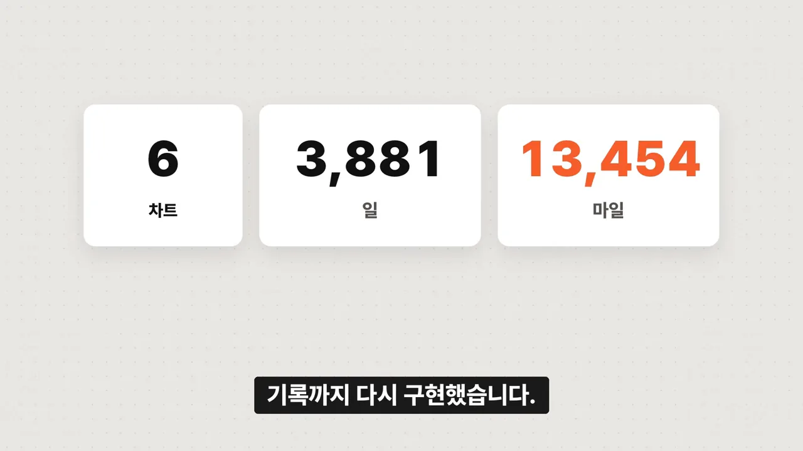
마지막은 로고 모양으로 영상이 드러나는 aurora-agency.ovh 첫 화면이에요. 아래 PR의 강조된 줄이 그 효과를 설명해요. 이미지 17개와 영상 6개로 겹쳐 쌓이는 카드와 부드러운 스크롤도 만들었어요.
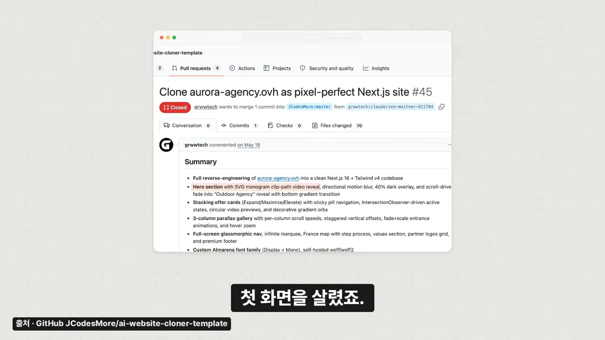
금지된 일과 복제본 쓰는 법
남의 사이트를 이렇게 복제해도 될까요? 영상은 고소 걱정에 답하는 대신, 저장소 README가 직접 금지한 세 가지를 읽어 줘요. 아래 Not Intended For 칸이 그 원문이에요.
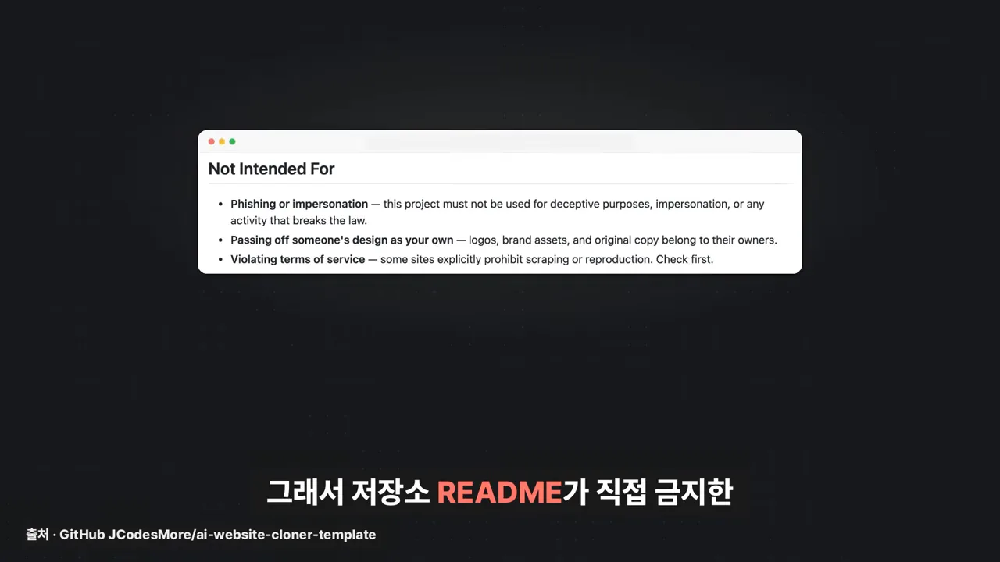
| 금지 | 무슨 뜻인가요 |
|---|---|
| 피싱이나 사칭 | 가짜 사이트로 남을 속이거나 법을 어기는 데 쓰면 안 돼요. |
| 남의 디자인 도용 | 로고, 브랜드 자료, 원문 글은 주인 것이에요. 글과 이미지를 원본 파일로 받아오니 더 조심해야 해요. |
| 약관 위반 | 스크래핑이나 복제를 막은 사이트가 있어요. 복제 전에 약관을 먼저 확인해요. |
필요하면 허락부터 받아야 해요. 제작자가 CLOU 사무소에 먼저 연락한 이유도 이거예요.
README가 권하는 쓰임
README의 Use Cases에는 세 가지가 있어요. 위에서부터 플랫폼 이전, 코드를 잃었을 때 복구, 레이아웃과 움직임 공부예요.
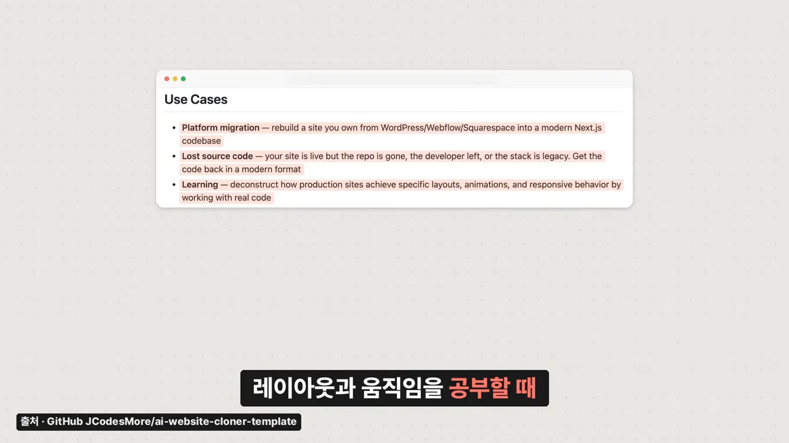
구조만 빌린 사례 두 가지
어떤 사람은 3D 포트폴리오 사이트의 구조에서 영감을 받아 스크롤 복도 포트폴리오를 만들었어요. 저작권이 있는 그림은 쓰지 않고, 아래 카드처럼 문 4개와 방 4개를 코드로 새로 그렸어요. 외부 그림은 0개예요. 내용은 본인 이력서라서 남의 구조로 자기 포트폴리오가 됐어요.
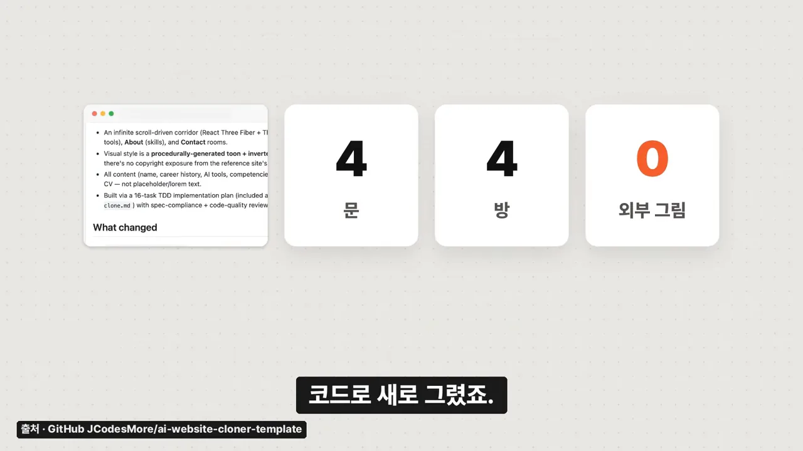
한 회사는 복제본이 아니라 이 저장소를 출발점으로 보안 플랫폼 소개 사이트를 시작했어요. 아래 PR의 제목은 'ARS Intelligence platform'이에요. 파일 73개로 7개 경로와 스크롤 첫 화면 8장면까지 갖췄어요.
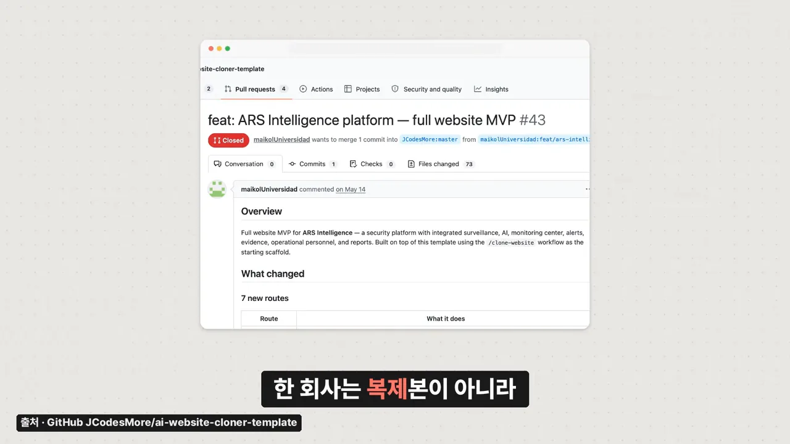
효과만 내 페이지로 가져오기
영상이 내리는 답은 이거예요. 복제본은 그대로 쓰지 말고, 좋은 기능과 효과만 뽑아 쓰면 돼요. 복제본 안에 무엇이 들어 있는지 떠올리면 이유가 분명해요.
영상은 CLOU 복제본의 검은 띠 효과를 금속 공방 샘플 페이지로 옮겨 보여 줘요. 복제가 끝난 세션에 이어서, 아래 입력창의 문장처럼 시켜요.
글, 사진, 로고는 가져오지 말고 검은 띠 지나가며 제목 나오는 효과만 public/metal-sample/index.html로 가져와 줘.
— 영상 06:40 화면의 입력창
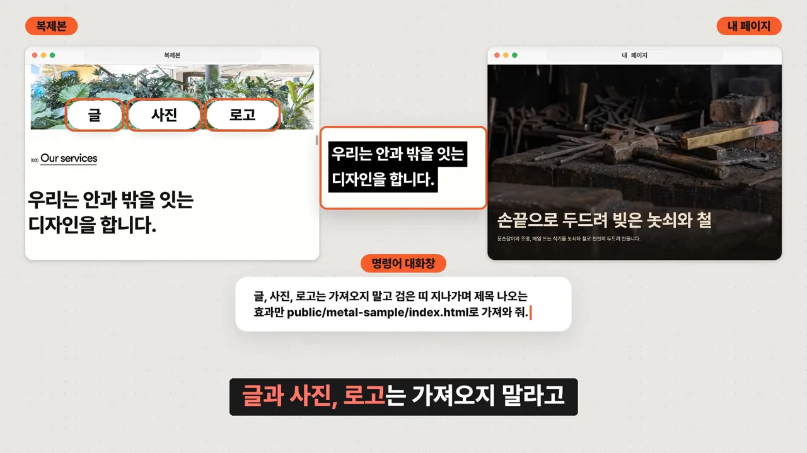
결과가 아래 화면이에요. 제목 '시간이 묻어나는 재료'에 검은 띠가 걸려 있고, 글과 바탕은 금속 공방 내용 그대로예요.
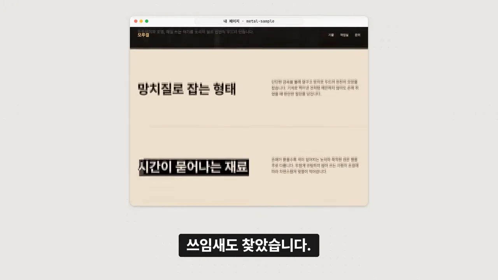
웹 앱과 일하는 방식까지
웹 앱 화면까지 복제한 사례
겉모습만 복제되는지 안쪽까지 되는지 궁금할 수 있어요. 사이트만이 아니라 웹 앱 화면을 다시 만든 사례도 있어요. 한 개발자는 원본 코드가 공개된 Paperclip의 관리 화면을 복제했어요. 아래 PR 제목이 'add Paperclip AI platform UI clone'이에요.
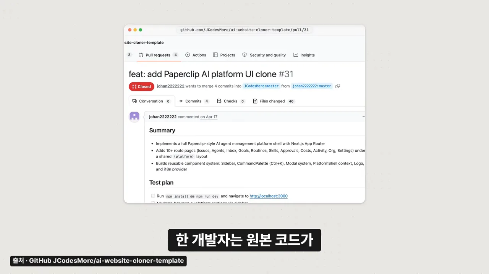
오른쪽 회색 카드가 결과 숫자예요. 경로 10개 이상과 Ctrl+K 명령 팔레트까지 파일 40개로 재구성했어요. 뒤에 겹쳐 보이는 건 다음 사례인 F1(Formula 1) 이슈 화면이에요.
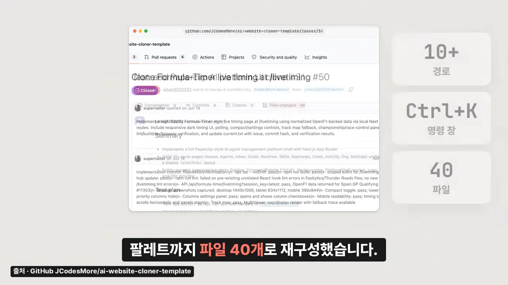
다른 사용자는 F1 기록판 화면을 복제한 다음 그 화면에 공개된 OpenF1 데이터를 연결했어요. 아래 이슈 댓글의 강조된 줄이 Monaco 지원을 추가했다는 보고예요. 실시간 기록과 2026 모나코 GP(Grand Prix) 다시 보기까지 만들었다고 해요. 영상은 복제한 화면에 공개 데이터를 붙이면 진짜 쓰는 도구가 된다고 정리해요.
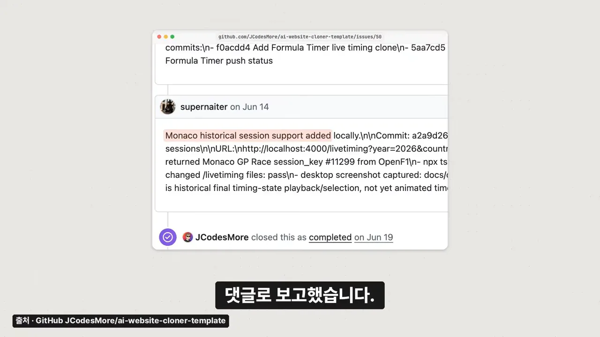
일하는 방식으로 들어온 사례
마지막 갈래는 일하는 방식이에요. 어떤 기업 교육 자료는 사이트를 만드는 네 가지 방식을 소개하면서, 아래 강조된 세 번째 방식으로 이 저장소를 꼽았어요. 참고할 사이트를 찾은 다음 이 저장소를 쓰는 순서예요. 이 게시물은 조회수 8만 160회까지 올라갔어요.
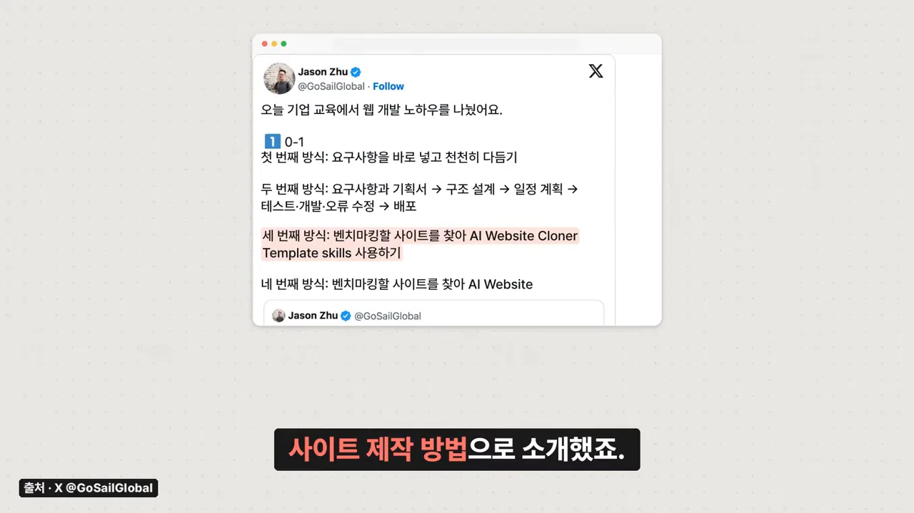
저장소 링크를 팀 디자이너 동료에게 넘겼다는 짧은 글도 있어요. 아래 게시물의 첫 줄이 그 내용이고, 조회 4,151회와 북마크 935개를 모았어요.
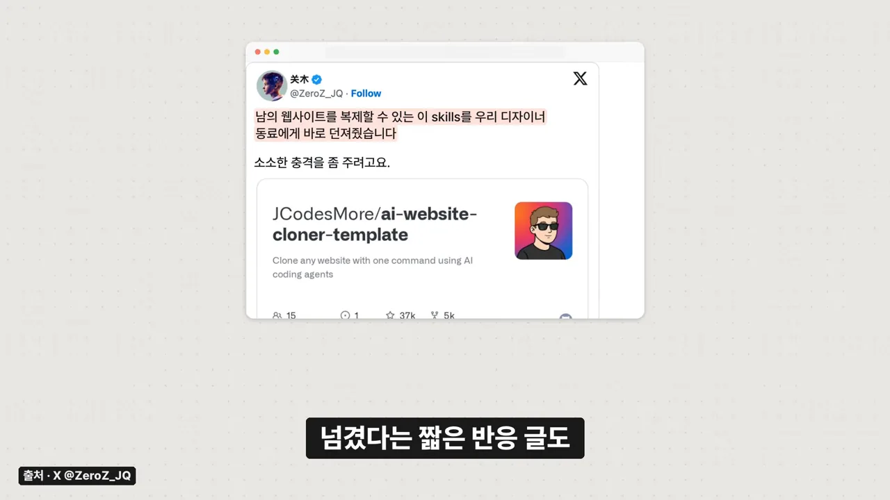
공모전 시안을 빨리 뽑는 데 쓴다는 말도 나왔어요. 아래 게시물의 강조된 줄이 '공모전용 목업 고속 생성'이에요.
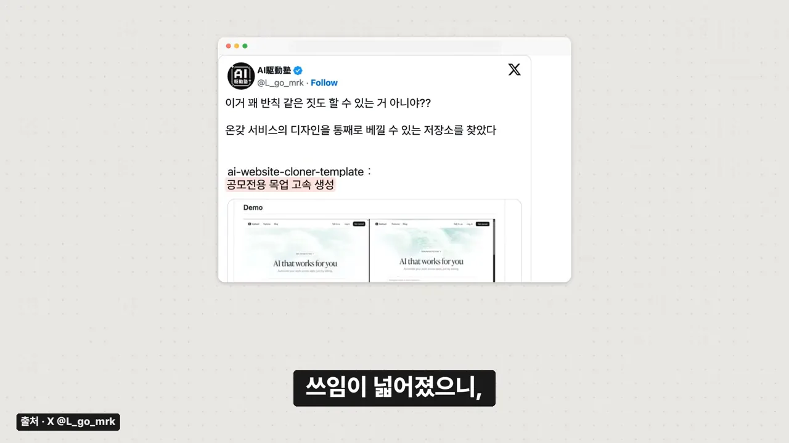
영상의 결론은 명령은 쉬워도 쓰임은 골라야 한다는 쪽이에요. 통째로 베끼는 대신 좋은 기능만 골라 쓰면 된다고 끝맺어요.